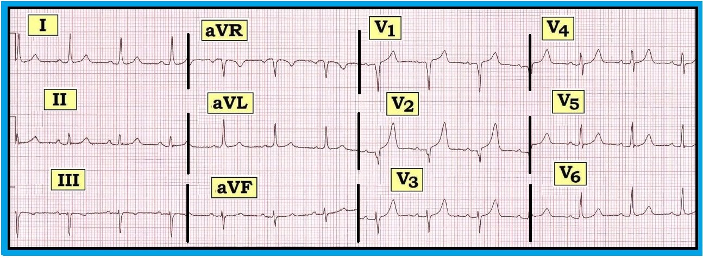

Ôn tập đọc điện tâm đồ – Số 74 (Kết quả đọc điện tâm đồ bằng máy tính – Sóng T nhọn – Phức bộ QS – Máy tính)
Điện tâm đồ 12 chuyển đạo trong Hình 1 dưới đây được ghi từ một phụ nữ 78 tuổi đến khám vì đau ngực không điển hình. Kết quả đọc bằng máy tính (computerized interpretation) là: Nhịp xoang; trục lệch trái (-10 độ) — nhưng điện tâm đồ ngoài ra “bình thường”.
- Bạn có đồng ý với kết quả đọc bằng máy tính không?
- Bạn thường đồng ý hay “không bao giờ” đồng ý với kết quả đọc bằng máy tính? Bạn có dùng tới máy tính không?


------------------------------------------
DIỄN GIẢI Hình 1:
Ví dụ này nhấn mạnh tầm quan trọng của việc đọc lại (overread) kết quả đọc bằng máy tính. Đây không phải là một điện tâm đồ "bình thường":
- Nhịp xoang bình thường, tần số ~85/phút. Các khoảng (khoảng PR/QRS/QT) bình thường.
- Có LAD (Left Axis Deviation – trục lệch trái), trục ước tính -10 độ — nhưng trục chưa lệch trái đủ để thỏa tiêu chuẩn LAHB (Left Anterior HemiBlock – blốc phân nhánh trái trước), vì QRS dương ở chuyển đạo II (tức là trục không âm hơn -30 độ).
- Không lớn buồng tim.
- Thay đổi QRST: Có phức bộ QS ở các chuyển đạo V1,V2. Thấy một sóng r nhỏ nhưng rõ ràng ở chuyển đạo V3. Vùng chuyển tiếp hơi muộn (sóng R trở nên cao hơn độ sâu sóng S ở giữa V4-đến-V5). Có sóng T đảo ngược nông ở chuyển đạo III. Có lẽ dấu hiệu đáng chú ý nhất là sự hiện diện của sóng T nhọn bất thường ở các chuyển đạo V1-đến-V4. Sóng T ở V2 khá cao.
NHẬN ĐỊNH: Cần đối chiếu lâm sàng để xác định ý nghĩa của các dấu hiệu này:
- Phức bộ QS ở chuyển đạo V1,V2 có thể cho thấy nhồi máu vùng vách không rõ thời điểm. Khía ở sườn xuống của phức bộ QS ở chuyển đạo V2 ủng hộ giả thuyết này – nhưng việc đã có sóng r rõ ràng ở chuyển đạo V3 có nghĩa là chúng ta không thể chắc chắn hình ảnh này phản ánh nhồi máu vùng vách cũ — đặt sai vị trí điện cực — hay biến thể giải phẫu.
- Cần ghi nhận sóng T đảo ngược nông, đối xứng ở chuyển đạo III. Tuy điều này có thể do thiếu máu cục bộ — sóng T đảo ngược đơn độc ở chuyển đạo III và/hoặc chuyển đạo aVF đôi khi có thể là dấu hiệu bình thường. Điều này càng đúng khi phức bộ QRS đi kèm T đảo ngược chủ yếu âm (như thấy ở đây) và không có T đảo ngược ở các chuyển đạo thành dưới còn lại (chuyển đạo II, aVF).
- Sóng T cao, nhọn, đáy hẹp ở nhiều chuyển đạo trước tim rõ ràng gợi ý tăng kali máu. Tuy vậy — kali máu của bệnh nhân này bình thường! Một nguyên nhân khác gây sóng T nhọn bất thường là thiếu máu cục bộ (NẾU ta làm “nghiệm pháp soi gương” bằng cách lật ngược bản ghi, hình ảnh soi gương của sóng T cao, nhọn ở thành trước — chính là sóng T đảo ngược sâu, đối xứng ở vùng tương ứng với phân bố các chuyển đạo thành sau).
- ĐIỀU CỐT LÕI: Hóa ra điện tâm đồ này hoàn toàn không thay đổi so với các bản ghi trước đó của bệnh nhân. Vì kali máu bình thường — kết quả đọc của chúng tôi là: “Nhịp xoang; có thể nhồi máu vùng vách cũ; sóng T nhọn ở chuyển đạo trước tim gợi ý thiếu máu cục bộ — nhưng không có thay đổi cấp so với các bản ghi trước.” Tuy vậy — kết quả đọc bằng máy tính rõ ràng đã bỏ sót một số dấu hiệu bất thường ...
Kết quả Đọc điện tâm đồ Bằng máy tính: Bạn hay Thù
Một câu hỏi thường gặp là: “Nên sử dụng (hay không sử dụng) kết quả đọc điện tâm đồ bằng máy tính thế nào cho tốt nhất?” Ý kiến rất khác nhau. Chúng tôi cho rằng câu trả lời tùy thuộc vào mục tiêu và mức độ kinh nghiệm của người đọc.
- Các hệ thống phân tích điện tâm đồ bằng máy tính không phải không bao giờ sai. Chúng còn rất xa mới hoàn hảo trong việc đọc điện tâm đồ. Nhiệm vụ của chúng ta là hiểu rõ hệ thống máy tính làm tốt điều gì — và điều gì chúng làm không tốt.
Hiện nay — hầu như mọi máy điện tâm đồ hiện đại đều tự động đưa ra kết quả đọc bằng máy tính. Điều này có lợi ích và hạn chế. Hãy xem xét những điều sau:
- Hệ thống máy tính rất giỏi tính toán các giá trị. Đó là việc của máy tính. Vì vậy — hệ thống máy tính cực kỳ chính xác trong việc tính: i) Tần số; ii) Các khoảng (PR/QRS/QT); và iii) Trục.
- Chúng thường đáng tin cậy trong việc nhận biết cơ chế nhịp xoang và các bản ghi bình thường.
- Với Người đọc Chuyên gia — ưu điểm lớn nhất của hệ thống máy tính là tiết kiệm thời gian! Không còn cần tính tần số, các khoảng hay trục — vì máy tính ngay lập tức in ra các giá trị này dễ đọc và chính xác. NẾU máy tính ghi “Điện tâm đồ bình thường” — theo đúng nghĩa đen, người đọc có kinh nghiệm có thể chỉ mất không quá 2-3 giây để đọc lại và ký kết quả (miễn là họ đồng ý với kết quả đọc).
- Với Người đọc Không Chuyên — lợi ích chính của hệ thống máy tính là ý kiến dự phòng mà hệ thống đưa ra. Máy tính có thể gợi ý những dấu hiệu mà người đọc ít kinh nghiệm lúc đầu không nghĩ tới. Điều này khuyến khích xem lại bản ghi cẩn thận và có trọng tâm hơn. Những gợi ý của máy cũng có thể mang tính giáo dục. Cuối cùng — sự tự tin có thể tăng lên khi phân tích của máy tính đồng ý với kết quả đọc của bác sĩ.
- LƯU Ý: Ý kiến dự phòng của máy tính có thể giúp chuyên gia-đang-vội tránh bỏ sót dấu hiệu điện tâm đồ nào đó.
CẢNH BÁO: Hệ thống máy tính không đánh giá tốt các bản ghi bất thường như với các bản ghi bình thường hoặc gần như bình thường (nhất là khi có những bất thường phức tạp ).
- Chúng kém chính xác hơn nhiều khi đọc các nhịp không có cơ chế xoang.
- Chúng có thể bỏ sót các nhồi máu kín đáo ...
- Chúng có xu hướng đọc quá mức hiện tượng ST chênh lên ở điểm J thường gặp trong các hình ảnh tái cực sớm (đôi khi gắn nhãn nhầm các biến thể bình thường này là “nhồi máu cơ tim cấp”).
- Chúng có thể bỏ sót gai tạo nhịp / WPW / sóng R cao ở V1.
Cách tiếp cận Đề xuất: Sử dụng máy tính như thế nào
Trình độ chuyên môn của người đọc quyết định cách tiếp cận:
- Với Người đọc Không Chuyên — Không đọc kết quả của máy tính ngay từ đầu (vì bạn không muốn kết quả đọc của mình bị thiên lệch bởi điều máy tính nói). Thay vào đó — hãy VIẾT RA (hoặc ít nhất là nghĩ ra) kết quả đọc của bạn trước khi nhìn vào kết quả của máy. Đối chiếu những dấu hiệu bạn ghi nhận với từng nhận định của máy tính. Sau đó xoá, sửa và/hoặc bổ sung vào kết quả đọc của máy tính khi cần. Phải thừa nhận — đọc điện tâm đồ theo cách này sẽ lâu hơn một chút — nhưng vì số bản ghi mà phần lớn người đọc không chuyên phải đánh giá là hạn chế, việc tiết kiệm thời gian kém quan trọng hơn nhiều so với tối ưu hoá độ chính xác. Đối chiếu kết quả đọc của bạn với điều máy tính nói có thể gợi ý những dấu hiệu lúc đầu chưa nghĩ tới — đồng thời buộc bạn phải xem lại mọi dấu hiệu còn nghi vấn. Điều này làm tăng độ chính xác.
- Với Người đọc Chuyên gia — Xem kết quả của máy tính hoặc trước hoặc sau khi tự đánh giá điện tâm đồ. Giảm tối đa thời gian dành cho việc xác định tần số tim, các khoảng và trục (vì máy tính rất chính xác với các thông số này). Cân nhắc đánh giá kỹ hơn NẾU nhịp không phải nhịp xoang — hoặc NẾU máy tính đọc điện tâm đồ là bất thường. Đọc lại từng nhận định của máy tính. Đánh dấu kiểm cạnh những nhận định chính xác. Xoá, sửa hoặc bổ sung các nhận định sai. Tốc độ tối ưu đạt được bằng cách nhìn tổng quát nhanh bản ghi kết hợp với xem kết quả của máy tính. Theo đúng nghĩa đen, chuyên gia chỉ nên mất không quá 2-3 giây để hoàn tất một điện tâm đồ bình thường. Hiểu rõ điểm mạnh và điểm yếu của máy tính trong việc đọc giúp chuyên gia nhanh chóng xác định khi nào nên bỏ qua một phần hay toàn bộ kết quả của máy tính.
- Với Người đọc bất kỳ — Nếu bạn không đồng ý với một hay nhiều nhận định của máy tính — hãy gạch bỏ chúng! Kết quả đọc của máy tính là một phần của hồ sơ bệnh án — vì vậy không nên để nguyên các nhận định sai mà không đánh dấu.
------------------------------------------
Lời Bình của Tác giả: Trước khi nghiên cứu chủ đề này (các công trình của tôi được liệt kê bên dưới) — tôi từng nghĩ kết quả đọc bằng máy tính là phí thời gian. Tuy nhiên, khi đã hiểu rõ lợi ích và hạn chế của chúng — tôi đã yêu thích kết quả đọc bằng máy tính. Theo đúng nghĩa đen, chúng đã giúp tốc độ đọc của tôi tăng gấp ba — nhất là khi có nhịp xoang và chỉ có bất thường tối thiểu. Mặt khác — tôi bỏ qua điều máy tính nói khi nhịp là bất kỳ nhịp nào khác ngoài nhịp xoang. Tôi hoàn toàn ý thức được sự cần thiết phải đọc lại cẩn thận các hình ảnh tái cực sớm và các bản ghi của bệnh nhân đau ngực. Cuối cùng — tôi nhận thấy rằng khi người đọc ít kinh nghiệm thật sự nỗ lực tự đọc điện tâm đồ trước khi xem máy tính nói gì — thì độ chính xác tăng lên.
-------------------------------------
- Để biết thêm thông tin — TRUY CẬP:
- Xem bản pdf về Kết quả Đọc điện tâm đồ Bằng máy tính trích từ Mục 13.0 (trong ECG-2014-ePub).
Các Công trình của chúng tôi về đọc điện tâm đồ bằng máy tính gồm:
- Grauer K: Chương 21 — Does the Computer Know Better? – trong Grauer K: Practical Guide to ECG Interpretation (Tái bản lần 2) – Mosby, St. Louis, 1998, tr. 374-379.
- Grauer K, Kravitz L, Ariet M, Curry RW, Nelson WP, Marriott HJL: Potential Benefits of a Computer ECG Interpretation System for Primary Care Physicians in a Community Hospital. J Am Bd Fam Prac 1:17-24, 1989.
- Grauer K, Kravitz L, Curry RW, Ariet M: Computerized Electrocardiogram Interpretations: Are They Useful for the Family Physician? J Fam Prac 24:39-43, 1987.
- Grauer K, Curry RW: Chương 11: Use of Computerized ECG Interpretation Programs. - trong Clinical Electrocardiography (Grauer & Curry) — Blackwell Scientific Publications, Boston, 1992, tr. 418-425.
-------------------------------------